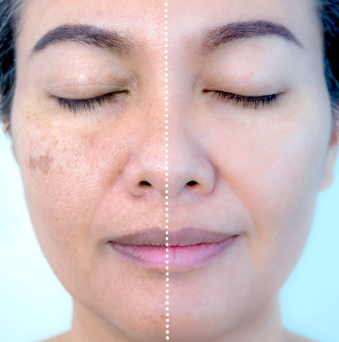

Tratamento de Melasma em Brasília: Protocolo Avançado 2026
Brasília é uma das cidades com maior incidência de melasma no Brasil — e não é por acaso. A combinação de altitude elevada, índice UV intenso e a alta proporção de população miscigenada (com maior predisposição genética) faz do DF um ambiente particularmente desafiador para quem sofre com essa condição. Aqui está um guia completo para tratar o melasma de forma eficaz em Brasília.

Por que o melasma é tão comum em Brasília?
Brasília tem características climáticas que tornam o tratamento de melasma particularmente desafiador:
- Altitude: A 1.171 metros de altitude, Brasília recebe radiação solar mais intensa que cidades no nível do mar — menos atmosfera para filtrar os raios UV.
- Índice UV: Entre os mais altos do país, especialmente de setembro a março. Dias de céu azul intenso com irradiação UV extrema são frequentes.
- Estação seca prolongada: A seca baixa a umidade e aumenta os danos causados pelo sol e vento na barreira cutânea, facilitando a penetração de agentes agressores.
- Calor acumulado: O calor intenso estimula melanócitos mesmo sem exposição direta ao sol.
Para quem tem predisposição genética (especialmente fototipos Fitzpatrick III a V, mais comuns na população do DF), esse ambiente é um gatilho constante para o melasma.
Atenção: Em Brasília, o protetor solar não é opcional no tratamento do melasma — é o pilar mais importante. Sem FPS 50+ com proteção de luz visível, nenhum outro tratamento será eficaz a longo prazo.
Diagnóstico correto: o primeiro passo
O melasma deve ser diferenciado de outras manchas faciais antes de iniciar o tratamento. Um profissional habilitado avalia com lâmpada de Wood (luz ultravioleta) para identificar:
- Melasma epidérmico: Superficial, responde melhor aos tratamentos tópicos
- Melasma dérmico: Mais profundo, requer protocolos mais intensivos
- Melasma misto: Componente epidérmico e dérmico simultâneos
Manchas que se confundem com melasma mas têm tratamento diferente incluem: hiperpigmentação pós-inflamatória, efélides (sardas), lentigos solares e dermatose cinzenta de Riehl.
Protocolos avançados disponíveis em Brasília
1. Fotoproteção avançada — o pilar insubstituível
Em Brasília, a proteção solar vai além do FPS 50+. Os protocolos avançados incluem:
- Protetor solar com filtro de luz visível (com óxido de ferro — tints) — fundamental, pois a luz visível também estimula melanócitos
- Antioxidantes tópicos (vitamina C, niacinamida, resveratrol) para potencializar a proteção
- Reaplicação do protetor ao meio-dia em Brasília
- Uso de chapéu e óculos escuros como complemento mecânico
2. Despigmentantes tópicos
O protocolo tópico em Brasília geralmente combina:
- Ácido tranexâmico: Age em múltiplas vias de produção de melanina, incluindo inflamação. É o despigmentante mais moderno e bem tolerado.
- Hidroquinona 2-4%: O padrão ouro histórico do tratamento, usado em ciclos de 3 a 6 meses com pausas para evitar ocronose paradoxal.
- Ácido kójico: Inibe a tirosinase (enzima da melanina). Bom complemento ou alternativa para quem não tolera hidroquinona.
- Retinoides: Aceleram o turnover celular, auxiliando na despigmentação. Usados à noite com supervisão.
3. Peelings químicos
Os peelings intensificam a resposta ao tratamento ao renovar as camadas superficiais da pele:
- Peeling de ácido glicólico (30-70%): Superficial a médio, boa tolerância, pode ser repetido mensalmente
- Peeling de Jessner: Combinação de ácidos, excelente para melasma epidérmico
- Peeling de TCA 15-20%: Médio, maior eficácia mas mais tempo de recuperação
- Peeling de ácido mandélico: Ótima opção para fototipos mais escuros, menor risco de hiperpigmentação pós-peeling
Em Brasília, os peelings são realizados preferencialmente no outono e inverno (abril a agosto), quando a exposição solar é menor. Cada sessão exige cuidado redobrado com fotoproteção.
4. Microagulhamento com cocktails despigmentantes
O microagulhamento com instilação de ativos despigmentantes (ácido tranexâmico, vitamina C, ácido kójico) diretamente na derme oferece resultados superiores ao uso tópico isolado, especialmente para o melasma dérmico. Pode ser realizado a cada 4 a 6 semanas.
5. Tratamento sistêmico
Nos casos mais resistentes, o tratamento sistêmico pode ser necessário:
- Ácido tranexâmico oral: 250mg 2x/dia por 3 meses, com avaliação médica prévia. Evidência crescente para melasma refratário.
- Avaliação hormonal: Especialmente em mulheres em uso de anticoncepcionais ou em período perimenopausal — a causa hormonal deve ser tratada.
- Ozonioterapia sistêmica: Como anti-inflamatório sistêmico, pode reduzir a resposta inflamatória que perpetua o melasma.
6. Laser — com cautela em Brasília
O laser é controverso para melasma e, em Brasília, deve ser usado com precaução máxima. A alta exposição solar no pós-procedimento pode causar recidiva e até piora. Quando indicado:
- Laser fracionado não ablativo (Fraxel, Clear + Brilliant) em baixa fluência
- Realizado apenas no inverno brasiliense (maio a agosto)
- Fotoproteção rigorosa obrigatória por meses após o procedimento
Tratamento de melasma personalizado em Brasília
A Dra. Lara Cristian oferece protocolos avançados de tratamento de melasma em Águas Claras, Brasília, com abordagem individualizada e integrativa.
Manutenção do resultado em Brasília
O melasma tem predisposição genética e não tem cura definitiva — mas tem controle efetivo. Em Brasília, a manutenção requer:
- Fotoproteção diária e permanente, mesmo em dias nublados ou dentro de casa perto de janelas
- Sessões de manutenção a cada 3 a 6 meses (peeling ou microagulhamento)
- Manutenção de rotina tópica com despigmentantes em ciclos
- Controle de fatores agravantes (hormônios, estresse, calor)
Dica brasiliense: Em Brasília, o horário de pico solar é das 10h às 16h. Evitar exposição direta nesse período é especialmente importante para quem está em tratamento de melasma.
Como escolher o profissional certo para tratar melasma em Brasília
O tratamento de melasma é complexo e individualizado. Ao escolher o profissional em Brasília, verifique:
- Formação médica (dermatologista ou médico com formação em dermatologia estética)
- Se realiza avaliação completa antes de indicar tratamentos
- Se propõe abordagem multimodal (não apenas um procedimento isolado)
- Se considera fatores sistêmicos (hormônios, inflamação, alimentação)
- Se tem protocolos de manutenção e acompanhamento a longo prazo
Perguntas Frequentes
O tratamento de melasma deve ser feito por médico com formação em dermatologia estética. A LC Estética em Águas Claras oferece protocolos personalizados com acompanhamento individualizado.
O tratamento mais eficaz é multimodal: fotoproteção rigorosa (especialmente em Brasília), despigmentantes tópicos (ácido tranexâmico, hidroquinona), peelings e, quando indicado, microagulhamento ou tratamento oral.
Sim, de forma significativa. Brasília tem um dos índices UV mais altos do Brasil. O protetor solar FPS 50+ com cobertura de luz visível é o pilar mais importante do tratamento — sem ele, nenhum outro protocolo será eficaz.
Inclui fotoproteção avançada com filtro de luz visível, despigmentantes tópicos em associação, peelings sazonais (preferencialmente no inverno), microagulhamento com cocktails despigmentantes e, quando indicado, ácido tranexâmico oral.
Referências
- Passeron T. "Treatment and maintenance strategies for melasma." J Eur Acad Dermatol Venereol. 2013;27(Suppl 1):5-9.
- Ogbechie-Godec OA, Elbuluk N. "Melasma: an Up-to-Date Comprehensive Review." Dermatol Ther (Heidelb). 2017;7(3):305-18.
- Handel AC, Lima PB, Tonolli VM, et al. "Risk factors for facial melasma in women: a case-control study." Br J Dermatol. 2014;171(3):588-94.
Agende seu tratamento de melasma em Brasília
A Dra. Lara Cristian atende em Águas Claras, Brasília DF. Protocolos avançados e individualizados para controle efetivo do melasma no DF.